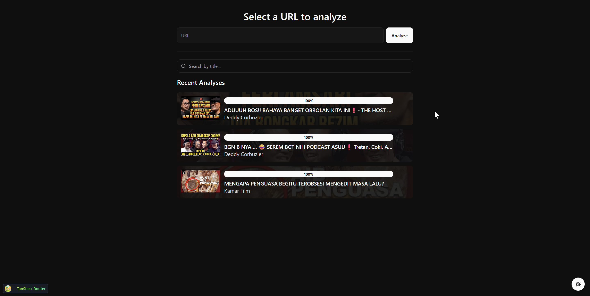
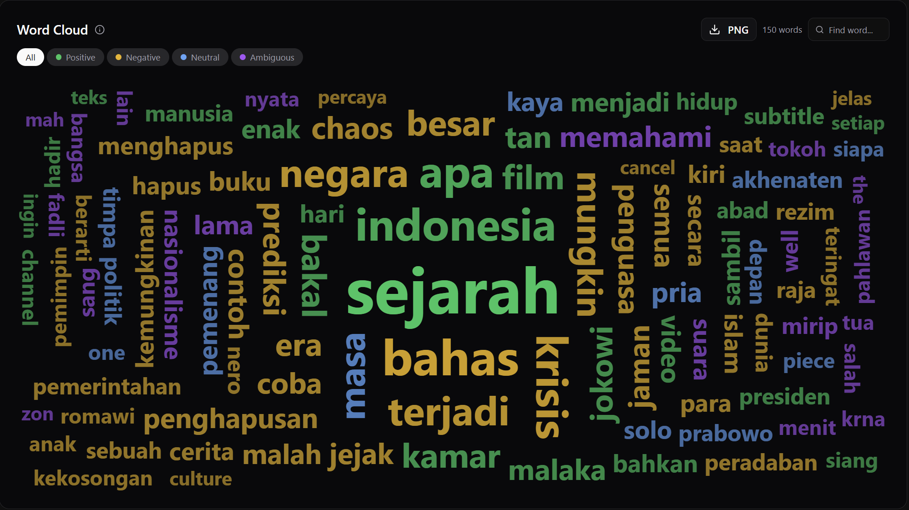
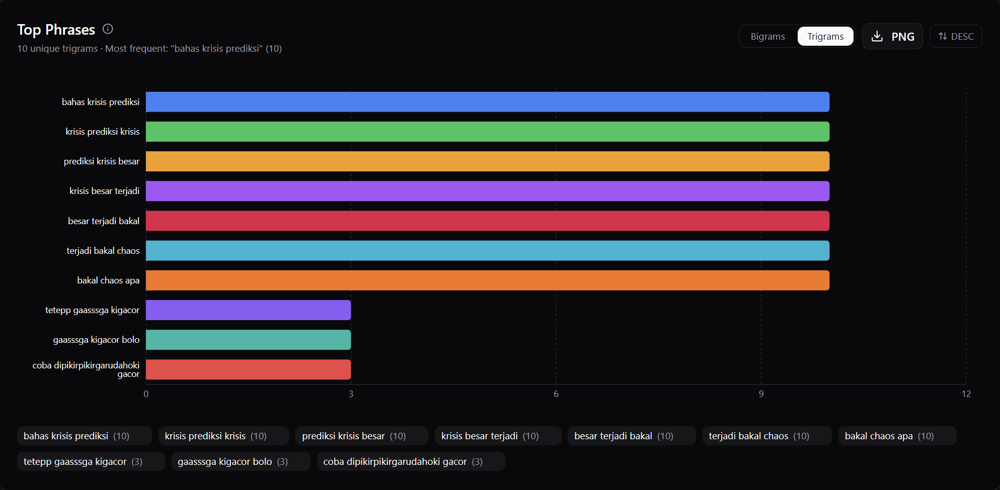
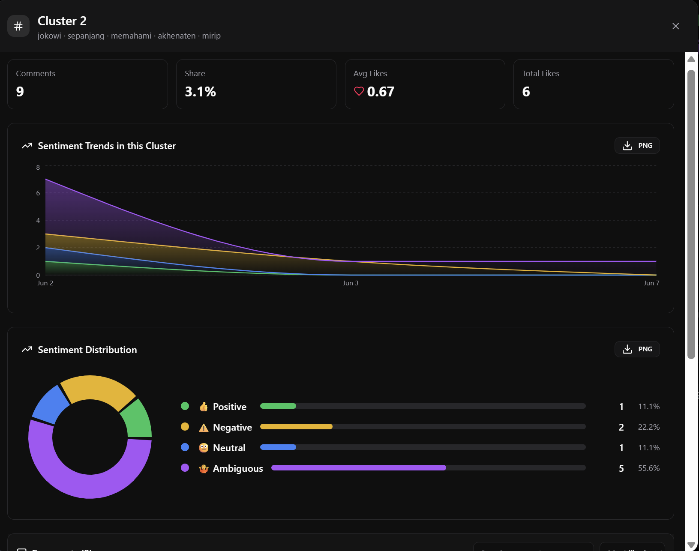
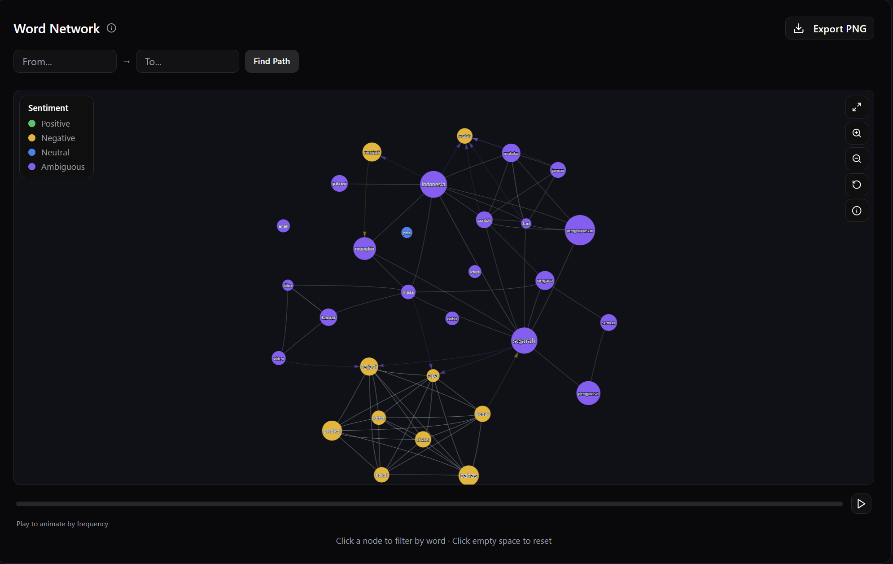
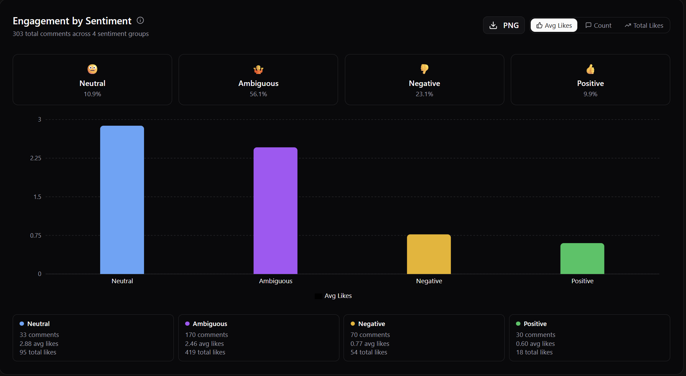

Overview
EmoTube WS adalah fork yang diperluas secara signifikan dari proyek Emotube original. Di atas pipeline sentiment yang sudah ada, proyek ini menambahkan layer Advanced Analysis dengan NLP Pipeline statistik murni (tokenization, TF-IDF, K-Means clustering, co-occurrence graph via networkx), sistem cache berbasis PostgreSQL (AnalysisCache), dan classifier SentimentHeadline yang melabeli tone keseluruhan video.
Dimulai dari rasa penasaran: "Apa sebenarnya yang dirasakan penonton dari video YouTube ini?" — lalu berkembang menjadi tool analisis komentar yang cukup lengkap.
What's New in This Fork
Advanced Analysis Dashboard
Layer analisis khusus yang dijalankan per-video, dikomputasi di background dengan live progress tracking via polling:
- Word Cloud — Top 150 kata per sentiment group (positive / negative / neutral / ambiguous) dengan multilingual stopword filtering (Indonesian + English).
- N-gram Analysis — Top bigrams dan trigrams diekstrak dari semua komentar; klik phrase manapun untuk filter komentar di tabel.
- Topic Clusters — TF-IDF + K-Means clustering untuk mengelompokkan komentar berdasarkan tema; auto-selects jumlah cluster optimal (silhouette score); drilldown modal per cluster dengan statistik sentimen.
- Word Network Graph — Co-occurrence graph dengan vis-network: ForceAtlas2 physics, sentiment-colored nodes, community detection, path finding, timeline filter, play animation, export PNG.
- Engagement by Sentiment — Rata-rata likes, total likes, dan jumlah komentar per sentiment group.





Backend Additions
- NLP Pipeline (
nlp_pipeline.py) — statistik murni (tanpa LLM): tokenisasi dengan langdetect, co-occurrence graph via networkx, TF-IDF clustering via scikit-learn. - AnalysisCache — model PostgreSQL dengan JSONB caching untuk 5 komponen NLP; setiap field di-cache incremental saat selesai dikomputasi.
- SentimentHeadline — classifier yang melabeli tone video sebagai Positive / Negative / Controversial / Viral / Boring / Neutral berdasarkan rasio sentimen dan metrik engagement.
- Metrik controversially dan engagement rate.
- CSV export, delete video + cache endpoint, cluster detail endpoint (sentimen breakdown + avg likes per cluster).
Frontend Additions
- AdvancedDashboard — polling-based progress UI, per-component status indicators, elapsed timer, stop/re-analyze controls.
- AnalysisGlobalTracker — persist state analisis aktif antar navigasi via sessionStorage.
- Export utilities — PNG export untuk charts, JSON report download, CSV comment export.
- Property-based tests (
fast-check+vitest) untuk network graph logic (bundling, color, edge options, node sizing, reveal order). - React 19 + TypeScript + TanStack Router + TanStack Query + Tailwind CSS v4 + ShadCN/UI + Recharts + Vite + Bun.
Port Changes
Default port diubah untuk menghindari konflik dengan service lain:
| Service | Original | Fork |
|---|---|---|
| Frontend | 3000 | 3123 |
| Backend | 8000 | 8123 |
| PostgreSQL | 5432 | 5433 |
Tech Stack
Backend: Python 3.11, FastAPI, SQLModel, PostgreSQL, Transformers/PyTorch, scikit-learn, networkx, langdetect
Frontend: React 19, TypeScript, TanStack Router, TanStack Query, Tailwind CSS v4, ShadCN/UI, Recharts, vis-network, D3.js (word cloud), Vite, Bun
Infrastructure: Docker Compose, YouTube Data API v3
Quick Start
-
Clone & Konfigurasi
git clone https://github.com/wahyusd/emotube-ws.git cd emotube-ws cp .env.example .env # Edit .env — isi YOUTUBE_API_KEY dan value lainnya
-
Jalankan dengan Docker (backend + database)
docker compose up -d --build
Gunakan--buildhanya saat pertama kali atau setelah mengubahrequirements.txt/package.json. Untuk run selanjutnya cukupdocker compose up -d— bind-mounts membuat perubahan source code langsung terdeteksi. -
Akses AplikasiSetelah container berjalan, buka:
Frontend http://localhost:3123 Backend API http://localhost:8123 API Docs http://localhost:8123/docs -
Masukkan API KeyBuka halaman Settings di aplikasi dan masukkan YouTube Data API v3 key kamu, atau atur melalui file
.envsebelum build.
API Endpoints
Videos
POST /api/videos/fetch— fetch dan analisis video YouTubeGET /api/videos/{id}— metadata videoGET /api/videos/{id}/with-comments— video + komentar (paginated)DELETE /api/videos/{id}— hapus video, komentar, dan cache
Comments
GET /api/videos/{id}/comments— paginated, filterable by sentiment / author / likes / phrase / sort
Advanced Analysis
POST /api/analysis/{video_id}/compute— trigger komputasi NLPGET /api/analysis/{video_id}— cached analysis (partial results supported)GET /api/analysis/{video_id}/cluster/{cluster_id}— detail cluster dengan komentarGET /api/analysis/{video_id}/export/csv— download komentar sebagai CSV
Chart Data
GET /chart-data?url={youtube_url}— data distribusi sentimen
Running Tests
# Frontend (property-based tests dengan fast-check + vitest) cd frontend bun run test # Backend cd backend pytest tests/
Credits
Proyek ini merupakan fork dari Emotube oleh 00200200, digunakan dan diperluas di bawah lisensi MIT.
Seluruh arsitektur original, integrasi YouTube, pipeline sentiment, dan fondasi UI merupakan karya dari original author.